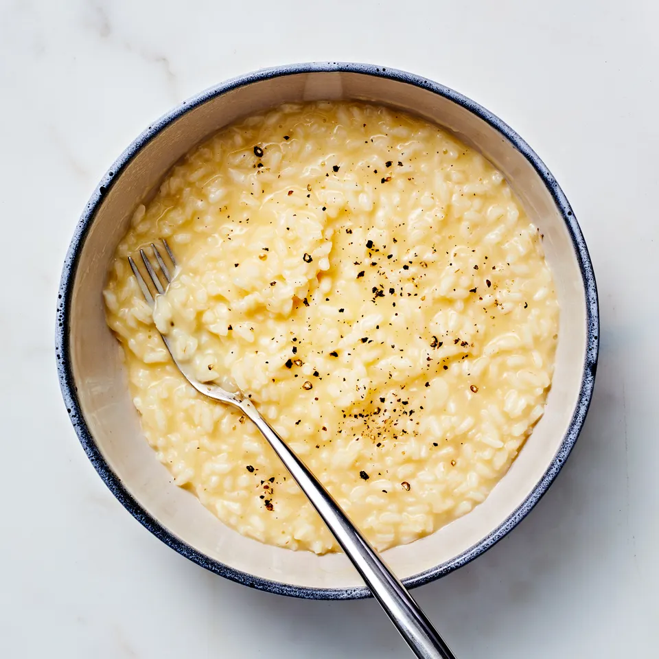

Risotto Recipe

Recipe Description
Risotto is like a clingy baby. You can’t put it down, you can’t walk away from it,
and you can’t ignore it. Its needs are simple, it just wants all of you. And if you
give it all of your patient attention, it will turn into a puddle of love. This
simple, pure, unadulterated version stands up on its own, but it also makes an
excellent canvas for seasonal ingredients—find out more about those toppings at the
very end of the recipe.
Ingredients
- 1 Tbsp. kosher salt, plus more
- 6 Tbsp. extra-virgin olive oil
- 1/2 large white onion, finely choppped (about 1/2 cups)
- 2 cupps carnaroli, arborio, or Japanese sushi rice
- 1 cup dry white wine
- 5 Tbsp. unsalted butter, cut into pieces
- 1 3/4 cups finely grated Parmesan, divided
- Freshly ground black pepper
Steps
- Combine 1 Tbsp. salt and 10 cups water in medium stockpot. bring to a very bare simmer over medium heat.
- Meanwhile, heat oil in a 6-qt Dutch oven over medium heat.
- Add onion and a pinch of salt, stirring frequently, until the onion is translucent and starting to soften, 6-8 minutes.
- Add 1/2 cup water and cook, stirring often, until water evaporates and onion is sizzling in oil and completely tender, about 5 minutes.
- Taste onion; if it's still firm at all, add another splash of water and continue cooking until soft.
- Add rice and stir well to coat with oil. Stir constantly until grains of rice are translucent around the edges and make a clattering sound when hitting the sides and bottom of pot. Around 5 minutes.
- Add wine and another pinch of salt. Bring to a simmer and cook, stirring occasionally, until wine is completely evaporated, about 2 minutes.
- Reduce heat to medium and add hot salted water to rice in 3/4-cup incredments, stirring constantly and allowing liquid to fully abosrb before adding more.
- Repeat until rice is tender and surrounded by fluid, not too thick. About 25-30 minutes.
- Start checking rice after about 15 minutes, grains should be tender but not mushy. Do not overcook!
- Remove pot from heat, add butter and stir until melted.
- Gradually add 1/4 cups Parmesan, stirring until cheese is melted and liquid surrounding risotto is creamy but very fluid.
- Stir in more hot salted water if needed for the right consistency. Taste and season with salt if needed.
- Divide risotto among warm bowls. Top each with a grind of pepper. Serve with remaining 1/2 cup Parmesan alongside for passing.
Back to top of page
Back to home